PHẦN 1: LÝ THUYẾT VẬN ĐỘNG HỌC & KỸ THUẬT BỘ CHÂN CHUYÊN SÂU CỦA ĐỨC
— Peter Scholl & Richard Schönborn (Giáo Trình Chuẩn Liên Đoàn Quần Vợt Đức - DTB)
Lời Dẫn Nhập: Hệ Thống Huấn Luyện Quần Vợt Đức Đỉnh Cao
Liên đoàn Quần vợt Đức (Deutscher Tennis Bund - DTB) là một trong những tổ chức thể thao danh giá và thành công nhất thế giới, nơi đã sản sinh ra những huyền thoại vĩ đại thống trị mọi mặt sân như Boris Becker, Steffi Graf và Michael Stich. Đứng sau những chiến tích phi thường đó là một hệ thống giáo trình huấn luyện khoa học, chuẩn hóa và bài bản bậc nhất hành tinh.
Tác phẩm Tennis Course: Volume 1 - Techniques and Tactics (nguyên tác tiếng Đức: Tennis Lehrplan, Band 1: Technik & Taktik do BLV Verlagsgesellschaft GmbH München xuất bản và được Barron's phát hành toàn cầu) là bộ cẩm nang chính thức của DTB. Được biên soạn bởi đội ngũ chuyên gia cơ sinh học hàng đầu — dẫn đầu bởi Trưởng ban huấn luyện Richard Schönborn và Tiến sĩ Peter Scholl — cuốn sách mang đến cái nhìn giải phẫu học chính xác đến từng chi tiết về mọi khía cạnh của môn thể thao này.
Chương 1: Phân Tích Vận Động Chức Năng (Functional Movement Analysis)
Khác với các trường phái huấn luyện cảm tính, trường phái Đức tiếp cận kỹ thuật quần vợt thông qua Phương pháp phân tích vận động chức năng. Mọi cú đánh đều được giải phẫu thành 4 thành phần cấu trúc hữu cơ:
1. Mục Tiêu Vận Động (Movement Goals)
Xác định chính xác các thông số vật lý của quả bóng sau khi rời mặt vợt: vận tốc góc, chiều sâu điểm rơi, biên độ bay cao hơn lưới và độ dốc quỹ đạo khi cắm xuống mặt sân.
2. Hành Động Hỗ Trợ (Supporting Actions)
Bao gồm việc định vị bộ chân, bước chia tách (split-step), hạ thấp trọng tâm và khóa chân trụ (anchor leg). Đây là bệ phóng truyền động năng bắt buộc cho cú đánh.
3. Hành Động Chính (Main Action)
Giai đoạn tăng tốc cuối cùng của đầu vợt hướng tới điểm tiếp xúc bóng, kiểm soát góc mặt vợt trong khoảng thời gian va chạm cực ngắn (4 đến 5 mili-giây).
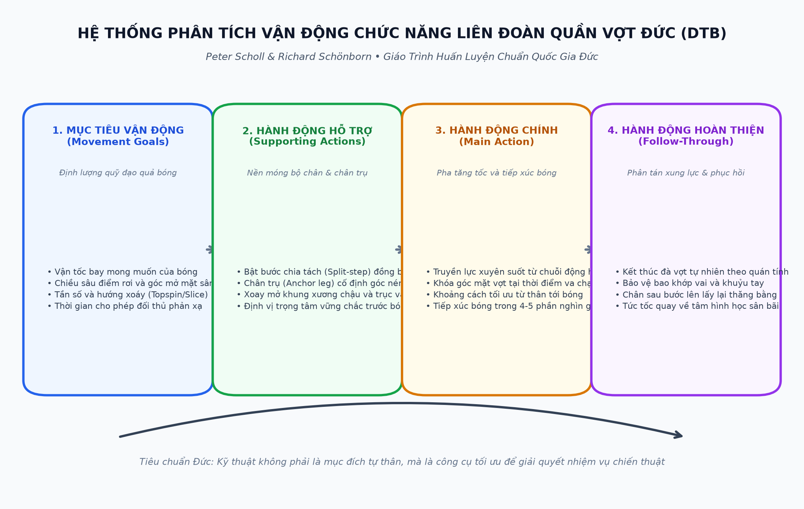
Chương 2: Khoa Học Bộ Chân & Chân Trụ Trọng Lực (Footwork & Anchor Leg)
Theo Richard Schönborn, hơn 70% các cú đánh hỏng trong quần vợt không bắt nguồn từ tay cầm vợt, mà bắt nguồn từ việc bộ chân không đưa được cơ thể vào vị trí tiếp xúc lý tưởng trước khi vung vợt.
| Thành Phần Bộ Chân | Phân Tích Cơ Sinh Học Của DTB | Tác Động Quyết Định Lên Cú Đánh |
|---|---|---|
| Tư thế sẵn sàng & Bước chia tách (Split-Step) | Bật nhẹ cả hai chân khi đối thủ chạm bóng, tiếp đất bằng nửa trước bàn chân với độ rộng hơn vai. | Khai thác phản xạ co giãn cơ bắp (Stretch-Shortening Cycle), cho phép bứt tốc về mọi hướng nhanh hơn 0.2 giây. |
| Chân trụ nạp lực (Anchor Leg / Support Leg) | Chân cùng phía với hướng bóng (chân phải cho cú thuận tay của người thuận tay phải) cắm vững chãi xuống mặt sân và khuỵu gối 110-120 độ. | Tích lũy thế năng đàn hồi từ phản lực mặt đất, làm trục xoay trung tâm để giải phóng lực hông và thân trên. |
| Chân bật giải phóng (Jumping / Drive Leg) | Đạp mạnh duỗi thẳng khớp gối và cổ chân ngay tại thời điểm bắt đầu vung vợt về phía trước. | Nâng toàn bộ khối lượng cơ thể bay lên và tiến về phía bóng, tạo ra độ nặng tối đa cho đường bóng. |
| Bước điều chỉnh cự ly nhỏ (Adjustment Steps) | Sử dụng các bước nhấp chân li ti tốc độ cao trong 0.5 mét cuối cùng trước bóng. | Triệt tiêu sai số cự ly, đảm bảo bóng luôn rơi vào đúng điểm ngọt của mặt phẳng tiếp xúc thẳng đứng. |
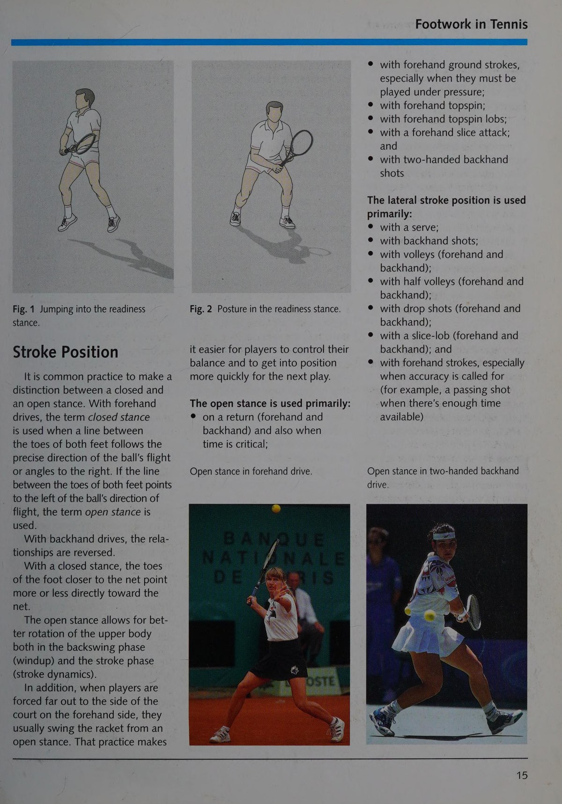
Chương 3: Nguyên Lý Cơ Sinh Học Chuyên Sâu Trong Huấn Luyện DTB
Giáo trình của Đức định hình ba nguyên lý cơ học bất biến mà mọi vận động viên đỉnh cao đều phải tuân thủ:
- Nguyên lý gia tốc chuỗi liên hoàn (Kinetic Chain Principle): Lực đánh bóng phải được truyền tuần tự từ các nhóm cơ lớn và chậm (chân, hông) sang các nhóm cơ trung bình (lưng, ngực, vai) và kết thúc ở các nhóm cơ nhỏ và nhanh (cẳng tay, bàn tay). Mọi sự đứt gãy trong chuỗi truyền lực này đều làm suy giảm uy lực và gây chấn thương dây chằng.
- Nguyên lý bảo toàn xung lượng góc: Khi xoay hông và vai về phía trước, việc giữ cánh tay không thuận thu gọn gần ngực giúp tăng tốc độ góc của thân trên theo định luật bảo toàn mô-men động lượng.
- Nguyên lý mặt phẳng tiếp xúc tối ưu: Khoảng cách từ trục cơ thể tới Điểm tiếp xúc bóng phải đảm bảo cánh tay không bị co rúm sát người (mất đòn bẩy) và cũng không bị với quá xa (mất sự thăng bằng trọng tâm).
PHẦN 2: CƠ HỌC VA CHẠM, ĐỘNG LỰC HỌC QUỸ ĐẠO & ĐẶC TÍNH MẶT SÂN
— Peter Scholl (Tennis Lehrplan)
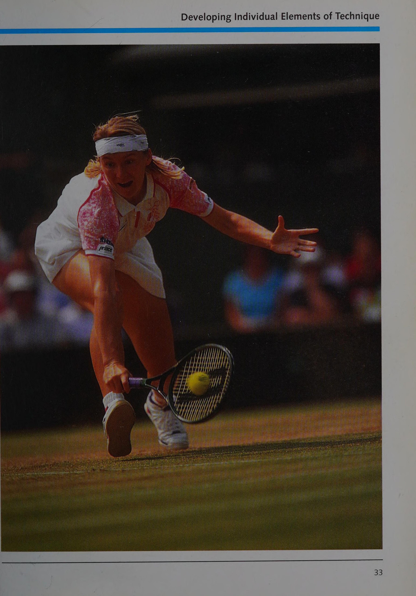
Chương 4: Cơ Học Va Chạm Giữa Mặt Lưới & Quả Bóng (Racket-Ball Interaction)
Dưới ống kính phân tích của các phòng thí nghiệm thể thao Đức, khoảnh khắc tiếp xúc bóng diễn ra theo các quy luật vật lý cực kỳ khắt khe:
Thời Gian Tiếp Xúc Cực Ngắn (4 - 5 ms)
Thời gian bóng nén vào mặt lưới ngắn đến mức não bộ con người hoàn toàn không thể đưa ra bất kỳ mệnh lệnh cơ học nào để thay đổi đường bóng trong lúc va chạm đang diễn ra. Mọi góc mặt vợt phải được cố định vững chắc từ trước đó.
Độ Biến Dạng Của Dây & Quả Bóng
Khi chạm bóng ở vận tốc cao, quả bóng nỉ bị nén bẹp tới một nửa đường kính của nó, đồng thời mặt lưới võng sâu ra sau. Độ căng của dây (String Tension) quyết định tỷ lệ giữa khả năng trợ lực và khả năng kiểm soát bóng.
Hành Động Khớp Cổ Tay Đúng Chuẩn
Cổ tay trong quần vợt không phải là một khớp gập tự do. Nó được giữ ở tư thế hơi ngửa về sau (Wrist Extension) và khóa cứng như bê tông tại thời Điểm tiếp xúc bóng để chống lại mô-men xoắn của quả bóng bay tới.
Chương 5: Động Lực Học Quỹ Đạo Bay & Sự Tương Tác Mặt Sân
Quả bóng sau khi rời mặt vợt chịu sự tác động đồng thời của ba lực cơ bản: trọng lực kéo bóng xuống, lực cản không khí làm chậm tốc độ, và lực nâng khí động học Magnus sinh ra từ độ xoáy của bóng:
| Loại Mặt Sân Thi Đấu | Hệ Số Ma Sát & Độ Nảy Của Bóng | Yêu Cầu Thích Ứng Kỹ Thuật Theo Chuẩn Đức |
|---|---|---|
| Sân Đất Nện (Clay Courts) | Hệ số ma sát rất cao, làm giảm 40% tốc độ bay ngang của bóng sau khi nảy, bóng nảy cao và cuộn mạnh. | Sử dụng thế đứng mở (Open Stance), đánh bóng với độ xoáy cuộn topspin cực lớn để đẩy đối thủ lùi xa, làm chủ kỹ thuật trượt (Sliding) vào bóng bằng chân trụ ngoài. |
| Sân Cỏ (Grass Courts) | Hệ số ma sát cực thấp, bóng trượt lướt sát mặt đất với góc nảy rất thấp và tốc độ giữ nguyên. | Hạ thấp trọng tâm tối đa bằng cách khuỵu sâu hai gối, sử dụng cú cắt bóng trượt (Slice) hiểm hóc và chiến thuật giao bóng lên lưới tấn công chớp nhoáng. |
| Sân Cứng (Hard Courts) | Độ nảy đều đặn, trung thực và phản ánh chính xác lực phát của tay vợt. | Phát huy lối đánh đôi công cuối sân hiện đại, kết hợp giữa những cú bạt phẳng uy lực và những đường bóng chéo sân xoáy sâu. |
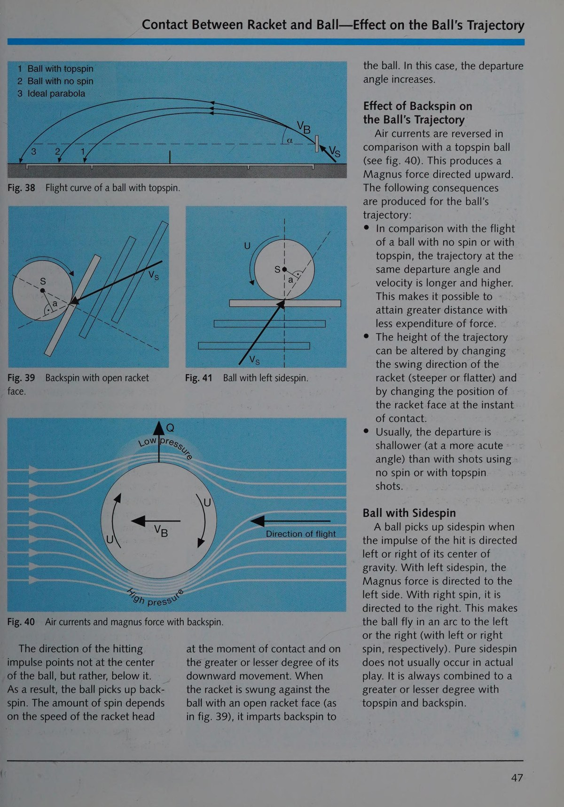
Chương 6: Hệ Thống Cầm Vợt Tiêu Chuẩn Quốc Tế
Giáo trình DTB tiêu chuẩn hóa các kiểu cầm vợt dựa trên vị trí của khớp đốt ngón trỏ và lòng bàn tay trên 8 cạnh của cán vợt bát giác:
- Cầm vợt kiểu Miền Đông (Eastern Forehand): Khớp ngón trỏ đặt tại cạnh số 3. Tạo sự ổn định cơ học tuyệt vời cho các cú đánh ngang hông và đòn bạt phẳng xuyên sân.
- Cầm vợt kiểu Bán Tây (Semi-Western): Khớp ngón trỏ nằm tại cạnh số 4. Là tiêu chuẩn vàng của quần vợt hiện đại, cho phép vung vợt với tốc độ đầu vợt cực lớn để tạo xoáy topspin nặng trên sân đất nện và sân cứng.
- Cầm vợt kiểu Continental (Cầm Búa): Khớp ngón trỏ đặt tại cạnh số 2. Kiểu cầm bắt buộc cho mọi cú giao bóng, cú bắt volley thuận/trái, cú đập bóng overhead và cú cắt bóng slice.
- Cầm vợt trái tay hai tay (Two-Handed Backhand Grip): Tay thuận cầm kiểu Continental hoặc Eastern trái tay ở đáy cán vợt, tay không thuận cầm kiểu Eastern hoặc Semi-Western thuận tay ở phía trên để làm động cơ chính đẩy bóng.
PHẦN 3: HỆ THỐNG CHIẾN THUẬT CĂN BẢN & MA TRẬN ĐÁNH ĐÔI TIÊU CHUẨN DTB
— Richard Schönborn (Trưởng Ban Huấn Luyện DTB)
Chương 7: Phân Biệt Chiến Lược & Chiến Thuật (Strategy vs. Tactics)
Trong hệ thống lý luận của Liên đoàn Quần vợt Đức, sự phân định giữa Chiến lược và Chiến thuật được vạch ra vô cùng sáng rõ:
- Chiến Lược (Strategy): Là kế hoạch tổng thể dài hạn được vạch ra trước khi bước vào trận đấu, dựa trên việc phân tích điểm mạnh, điểm yếu, thể lực và tâm lý của đối thủ so với bản thân (Ví dụ: "Hôm nay tôi sẽ kiên trì khoét sâu vào cú trái tay của đối phương và kéo dài các loạt bóng bền để vắt kiệt thể lực của họ").
- Chiến Thuật (Tactics): Là các quyết định hành động cụ thể trong từng pha bóng để giải quyết một tình huống tức thời trên sân (Ví dụ: "Đối thủ vừa trả bóng ngắn, tôi lập tức thực hiện cú tiếp cận dọc dây và tiến lên chiếm lưới").
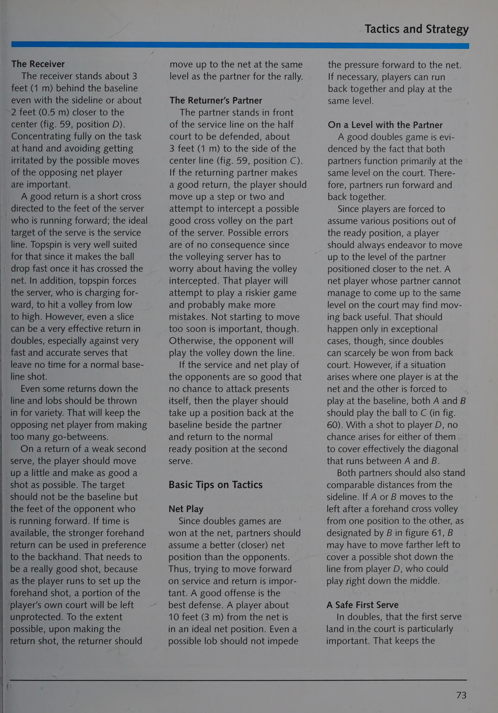
Chương 8: Bốn Tình Huống Chiến Thuật Cơ Bản Của DTB
Toàn bộ các pha bóng trong quần vợt từ cấp độ phong trào đến Grand Slam đều có thể quy về 4 tình huống chiến thuật nền tảng:
1. Tình Huống Khởi Đầu (Serve & Return)
Giai đoạn thiết lập quyền kiểm soát điểm số. Người giao bóng tìm cách chiếm thế chủ động ngay từ cú chạm bóng đầu tiên; người trả giao bóng tập trung hóa giải uy lực và đưa điểm số về trạng thái trung lập.
2. Tình Huống Đấu Bền Trung Lập (Neutral Rally)
Cả hai tay vợt đều đang đứng sau vạch baseline. Mục tiêu số một là duy trì chiều sâu của đường bóng cách vạch cuối sân 1 mét, kiểm soát nhịp độ an toàn và kiên nhẫn chờ đợi cơ hội đối thủ phạm sai lầm.
3. Tình Huống Tấn Công (Offensive Phase)
Xuất hiện ngay khi nhận diện được một quả bóng ngắn của đối phương. Bạn chủ động bước vào sân đón bóng sớm, tung cú tiếp cận sâu ép đối thủ lùi xa và tiến lên lưới dứt điểm điểm số.
4. Tình Huống Phòng Thủ (Defensive Phase)
Khi bạn bị đối phương đẩy ra xa khỏi sân hoặc dồn vào thế bí. Mục tiêu không phải là ghi điểm liều lĩnh, mà là dùng cú lốp bóng cao hoặc cắt bóng sâu để kéo dài thời gian bóng bay, giúp bạn kịp phục hồi vị trí trung tâm.
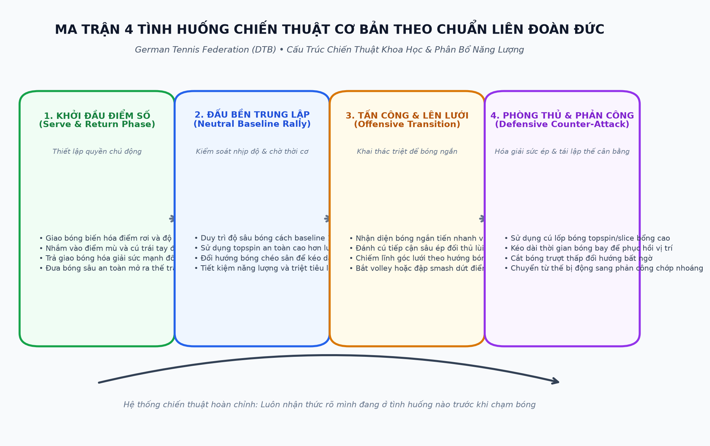
Chương 9: Nghệ Thuật Đánh Đôi Tiêu Chuẩn Đức (DTB Doubles Tactics)
Trong giáo trình đào tạo đội tuyển của Đức, đánh đôi được coi là đỉnh cao của sự phối hợp không gian hình học và tốc độ phản xạ:
| Chiến Thuật Đánh Đôi | Mô Tả Triển Khai Trên Sân | Mục Đích Tác Chiến Của Đội Tuyển Đức |
|---|---|---|
| Chiếm lĩnh lưới song song (Parallel Net Control) | Cả hai tay vợt nhanh chóng di chuyển lên lưới tạo thành một bức tường chắn cách lưới từ 2 đến 3 mét. | Bịt kín mọi góc đánh chéo sân, tạo áp lực thị giác nghẹt thở buộc đối thủ phải tung ra cú lốp bóng rủi ro cao. |
| Đội hình chữ I (The I-Formation) | Người đứng lưới cúi thấp người ngay trên vạch chữ T trung tâm, người giao bóng đứng sát chấm giữa baseline. | Gây rối loạn thị giác cho người trả giao bóng, che giấu hoàn toàn hướng di chuyển vồ bóng (Poach) của người đứng lưới. |
| Tấn công vào trung lộ (Center T Attack) | Mọi cú volley hoặc giao bóng đều nhắm vào chính giữa hai đối thủ. | Khai thác điểm mù giao tiếp giữa hai người, triệt tiêu góc đánh hiểm hóc và loại trừ nguy cơ bóng bị phản công dọc dây. |
PHẦN 4: CẨM NANG KỸ THUẬT TOÀN DIỆN & CÁC BIẾN THỂ ĐỈNH CAO
— Peter Scholl & Jock Reetz
Chương 10: Đòn Đánh Nền Tảng: Forehand & Backhand Đỉnh Cao
Giáo trình DTB phân tích chi tiết cơ cấu giải phẫu của hai đòn đánh quyết định từ vạch cuối sân:
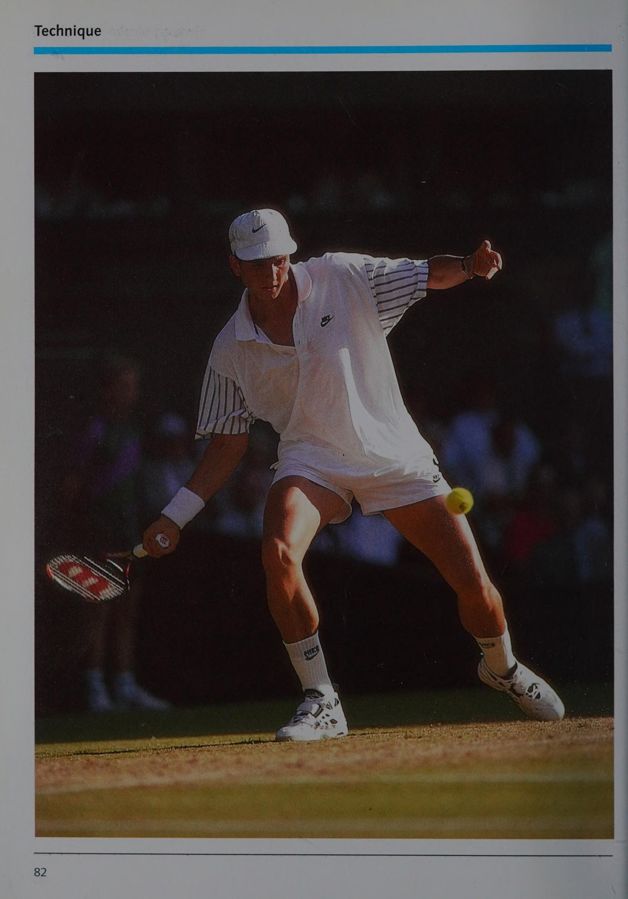
Cú Thuận Tay Topspin Hiện Đại (Modern Forehand)
Sử dụng kiểu cầm Bán Tây (Semi-Western) kết hợp thế đứng mở (Open Stance). Đầu vợt hạ sâu dưới bóng, cánh tay vung từ trong ra ngoài và gạt vợt qua vai theo động tác "gạt nước kính ô tô" (Windshield Wiper) để tạo độ cuộn cực đại.
Cú Trái Tay Hai Tay Uy Lực (Two-Handed Drive)
Tay không thuận đóng vai trò cánh tay phát lực chính, đẩy bóng xuyên suốt qua điểm tiếp xúc trước hông phải. Giữ thăng bằng trục cơ thể hoàn hảo và xoay vai trọn vẹn kết thúc sau gáy.
Cú Trái Tay Cắt Bóng Bám Sân (Backhand Slice)
Cầm kiểu Continental. Đưa vợt cao ngang vai, chém mặt vợt từ trên xuống dưới và trượt xuyên qua đáy quả bóng, tạo ra quỹ đạo bóng bay là là sát mép lưới và trượt cắm nhanh sau khi chạm đất.
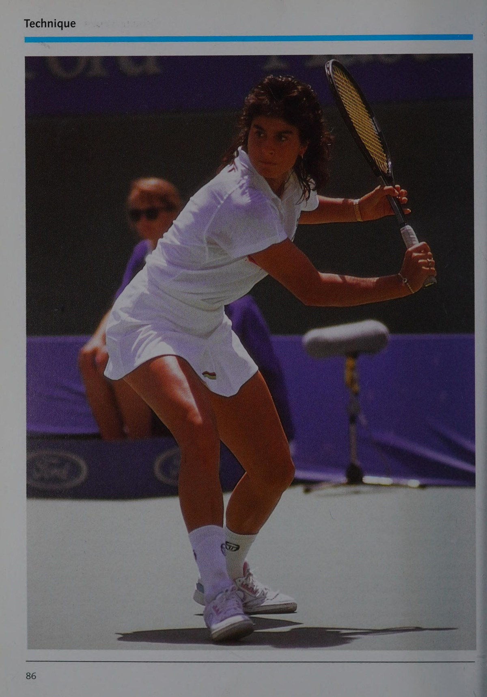
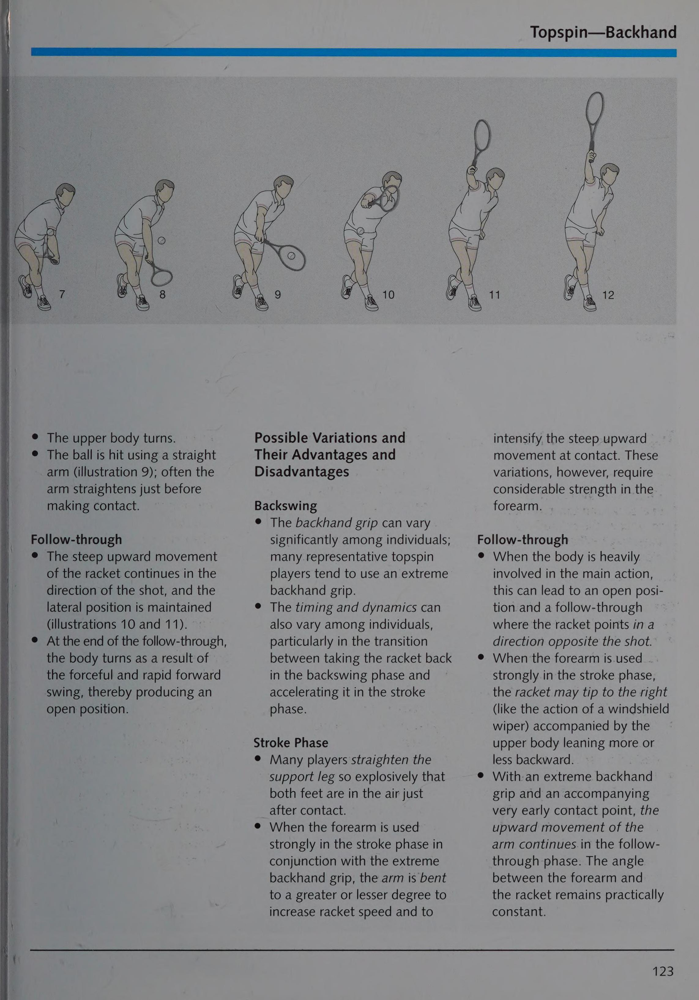
Chương 11: Các Biến Thể Kỹ Thuật Đỉnh Cao Của Nhà Vô Địch
Những pha bóng xuất sắc nhất tại các giải đấu Grand Slam thường được định đoạt bởi các đòn đánh biến thể tinh tế:
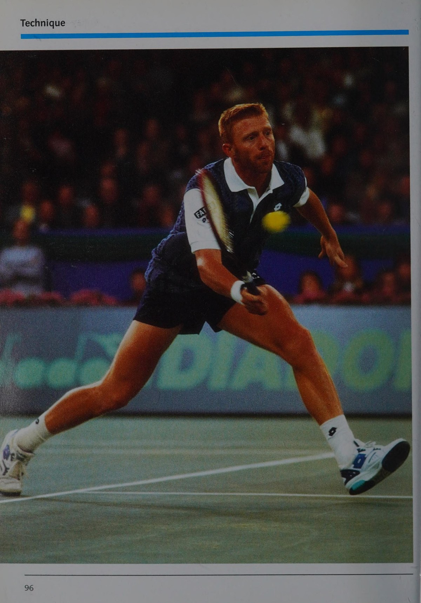
| Biến Thể Kỹ Thuật Đỉnh Cao | Cơ Chế Thực Hiện Cơ Sinh Học | Hiệu Quả Chiến Thuật Trên Sân |
|---|---|---|
| Cú Bỏ Nhỏ Tinh Tế (The Drop Shot) | Ngụy trang hoàn hảo động tác chuẩn bị giống hệt một cú bạt bóng uy lực, sau đó hãm đà đột ngột và đệm nhẹ vào đáy quả bóng với mặt vợt mở rộng. | Bóng rơi ngay sát chân lưới và chết đứng sau hai nhịp nảy ngắn, trừng phạt đối thủ đứng quá sâu sau vạch baseline. |
| Cú Lốp Bóng Topspin (Topspin Lob) | Khuỵu sâu gối đón bóng thấp, vuốt ngược đầu vợt lên trời với tốc độ cực lớn để tạo xoáy cuộn mãnh liệt. | Bóng bay vút qua tầm với của người đứng lưới, sau đó cắm chúc xuống mặt sân và nảy vọt ra xa về phía hàng rào. |
| Cú Đập Bật Nhảy (Jump Smash / Boris Becker Style) | Nhảy bật bằng cả hai chân lên không trung đón bóng ở điểm cao nhất, hoán đổi vị trí chân trên không và Động tác sấp cổ tay / xoay trong cẳng tay cắm bóng. | Tạo góc cắm bóng dốc đứng và tốc độ kinh hoàng, không cho đối thủ bất kỳ cơ hội phòng thủ nào. |
| Cú Giao Bóng Kick Serve (American Twist) | Tung bóng hơi ra sau đầu góc 11 giờ, vung vợt chải từ góc 7 giờ lên góc 1 giờ trên mặt bóng khi tiếp xúc. | Bóng nảy vọt lên cao ngang vai hoặc mặt của đối thủ và giạt mạnh sang góc trái, vô hiệu hóa hoàn toàn cú trả giao bóng của họ. |
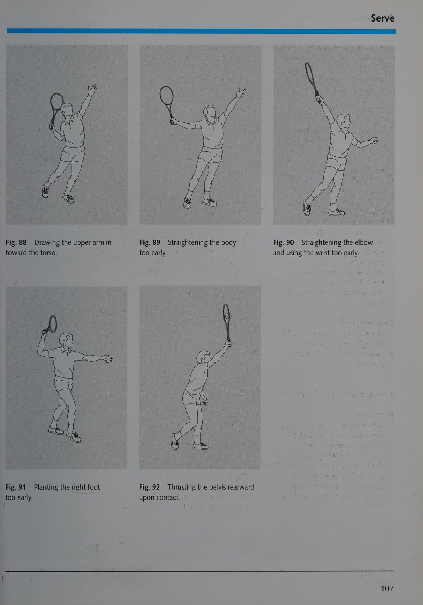
Chương 12: Cá Nhân Hóa Kỹ Thuật Trong Quần Vợt Đỉnh Cao
Các tác giả của Liên đoàn Quần vợt Đức đúc kết rằng: mặc dù các nguyên lý cơ sinh học là phổ quát và bất biến, mỗi vận động viên vĩ đại đều có quyền phát triển những nét phong cách cá nhân độc đáo phù hợp với cấu trúc giải phẫu và cá tính của riêng mình.
- Tôn trọng cấu trúc cơ thể tự nhiên: Một tay vợt có chiều cao vượt trội như Boris Becker sẽ có chuỗi phát lực giao bóng khác với một tay vợt có đôi chân tốc độ phi thường như Steffi Graf.
- Tính hiệu quả là thước đo cao nhất: Một động tác kỹ thuật chỉ được coi là hoàn hảo khi nó mang lại tính ổn định cao nhất dưới áp lực thi đấu căng thẳng nhất và không gây tổn hại cho sức khỏe cơ xương khớp lâu dài.
- Học tập suốt đời: Quần vợt đỉnh cao liên tục biến đổi với sự phát triển của công nghệ vợt, dây và mặt sân. Người chơi thông thái luôn duy trì tinh thần cầu thị, liên tục tinh chỉnh kỹ thuật để giữ vững ngọn lửa đam mê và phong độ đỉnh cao.